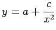

Inhalt Index DeskTop Bronstein

 Funktionen und ihre Darstellung Gebrochenrationale Funktionen
Funktionen und ihre Darstellung Gebrochenrationale Funktionen


Die Funktion
liefert eine Kurve 3. Ordnung. Sie hat die beiden Asymptoten x = 0 und y = a und besteht aus zwei Ästen, von denen der eine einer monotonen Änderung von y zwischen a und  bzw.
bzw.  entspricht, während der andere drei charakteristische Punkte durchläuft: einen Schnittpunkt A mit der Asymptote bei ein Extremum B bei und einen Wendepunkt C bei Für die Lage dieser Äste gibt es vier Fälle, die von den Vorzeichen von b und c abhängen.
entspricht, während der andere drei charakteristische Punkte durchläuft: einen Schnittpunkt A mit der Asymptote bei ein Extremum B bei und einen Wendepunkt C bei Für die Lage dieser Äste gibt es vier Fälle, die von den Vorzeichen von b und c abhängen.
Die Schnittpunkte D und E mit der x-Achse liegen bei ihre Anzahl kann zwei, eins (Berührung) oder null betragen, je nachdem, ob für b2-4ac gilt: >0,=0 oder <0. Die Funktion (2.47) geht für b=0 in die Funktion  (s. Abbildung der reziproken Potenz)

und für c=0 in die gebrochen lineare Funktion , einen Spezialfall von (2.46), über.